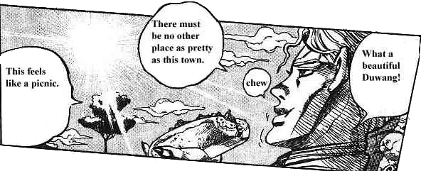

Muda da. Mudamudamudamudamudamuda-MUDA! ZA WARUDO! Toki wo tomare. ... Soshite, toki wa ugoki dasu. ROADA ROLLA DA! WRYYYYYYY!— Дио Брандо
JoJo’s Bizarre Adventure (moon. ジョジョの奇妙な冒険 Jojo no Kimyō na BōkenJojo no Kimyō na Bōken — рус. Странные приключения ЙоЙо aka жожо, жожа, йойо; быдл. жижа) — японская манга, древней интернетов, до сих пор живущая и породившая в девяностых пару фейловых ОВАшек, а несколько лет назад — хороший, годный ТВ-сериал, ныне полностью охвативший события пяти частей манги (из восьми). Каждая часть — независимая история со своим набором персонажей, причём имя главгероя каждой части можно сократить до ДжоДжо (Джонатан Джостар, Джозеф Джостар, Джотаро Куджо и т. д.). Да, они родственники.
В целом, JoJo — это как войнушки во дворе. Ты такой, "Я застрелил тебя! Ты мёртв!", а после твой друг такой, "Не-а, у меня есть алмазный бронежилет!", и ты в обратную, "Мой пистолет стреляет алмазо-пробиваемыми пулями!", и вы продолжаете по-очереди придумывать абсурдную фигню, пока кто-нибудь не дойдёт до логического конца, который в принципе нельзя перебить.— Суть манги из уст анонимуса с 4chan
Всего в манге 8 частей и недавно была анонсирована девятая; в каждой части есть свой сюжет, который стремительно развивается от обычного сёнен-приключения до эпика с безумными злодеями, фантасмагорией и разрыванием на части.
Сюжет первых двух частей замешан на вампирах и их прародителях, древних каменных масках, позволяющих самому стать вампиром, а также хамоне — технике боя, замешанной на энергии дыхания, то есть жизни и потому очень действенной против нежити. Начиная с третьей части, ха́мон уступает место концепции «стендов» — чего-то наподобие боевых духов, которые вылезают по команде хозяина и действуют по принципу его внутреннего эго, каждый из них по-своему уникален. С каждой новой частью идея стендов все более развивается и совершенствуется, появляются другие интересные приемы и объекты интереса.
Центральное место занимают бои. Бои здесь непредсказуемые, яростные и, что немаловажно, продуманные. Почти каждый бой, начиная где-то с середины второй части (а то и раньше) — в первую очередь схватка умов, из которой победителем выходит тот, кто быстрее соображает, правильно оценивает вражеские и свои возможности, умеет находить нетривиальные решения — но и превозмогания никто не отменял. Сами сюжеты банальны, особенно в первых частях и ниже написанная модель их развития в той или иной степени типична для каждой части; вот вам герой aka ДжоДжо, готовый вершить правосудие и добро и по чей то злой воле вокруг него начинают плодиться враги и поочерёдно нападать. Но протагонист расправляется со всеми по-очереди, часть из них решает дружить с героем, и так вокруг ДжоДжо постепенно растёт супер-команда, после чего вместе идут валить главного злодея.
С чего всё и началось. Имеет место в конце XIX века (а точнее в 1889 году) в викторианской Англии. Главный герой — английский аристократ, истинный джентельмен, и просто хороший человек Джонатан Джостар. Главный злодей — его сводный брат, трус, лжец, девственник и крайне нехороший человек Дио Брандо, который волею судьбы, а также своей жадности и нехорошести становится вампиром. Первая часть имеет свои корни в старых-добрых сёненах восьмидесятых годов а-ля Hokuto no Ken, и это ясно видно благодаря излишнему пафосу, килограммам копипасты из западной культуры и порой несуразности происходящего.
Происходит аж через пятьдесят лет после первой части в 1939. Главный герой — внук Джонатана, крайне умный и хитрый Джозеф Джостар, постоянно выкидывающий разные по уровню хитрожопости трюки и попутно тонко троллящий оппонентов. Главные злодеи — пиллармены (англ. Pillar Men) — древние супервампиры, мирно продремавшие пару тысяч лет и наконец вышедшие из сычевален колонн. По сравнению с первой частью выделяется большим количеством смехуёчков, но никак не меньшим пафосом, а в течение сюжета Джозеф успевает заглянуть и в Нью-Йорк, и в Мексику, и даже в Европу.
Одна из самых известных, если не самая известная часть, её события происходят через пятьдесят лет после второй в 1989 году. Главный герой — двухметровая шкафина-ОЯШ Джотаро Куджо, постербой и одна из самых узнаваемых фигур серии, постоянно (из-за аутичности и проблем с выражением эмоций) ходит с серьёзным хлебалом и строит из себя эдакого Клинта Иствуда. Главный злодей — (спойлер: поднявшийся со дна морского Дио, успешно спиздивший тело Джонатана после его смерти в конце первой части). Именно с третьей части в серии начинают появлятся стенды, а сама серия переходит на формат злодея недели. Сама же часть представляет из себя путешествие из Японии в Египет, сдобренное интересными фактами о культуре, обычаях и достопримечательностях азиатских стран.
WRYYYYYYYYYYYYYYYYYYYY! (читается «урииииииии!») — боевой клич всех вомпэров манги, но Дио, ясен пень, запомнился больше остальных, и крик был нагло приписан ему.
В интернетах сей дивный звук прославился благодаря флэш-анимации с изображением трафаретного человечка, избивающего какую-то свою жертву стендом, делающего ZA WARUDO!!!, и после броска в нее дохрена ножей, роняющего на нее асфальтовый каток. Триумфальная поза трафаретного человечка, использование катка как оружия и сам звук были позаимствованы из игры-файтинга по мотивам манги. Однако Дио и в манге ронял на оппонента каток, правда, только раз и (спойлер: безуспешно. Не на того напал.).
ZA WARUDO!!! — другой боевой прием Дио. Представляет собой дикий вопль «ZA WARUDO!!!», после которого изображение на экране становится негативным (в игре — черно-белым и негативным, в аниме же цвета вновь возвращаются), и время останавливается. На самом деле ZA WARUDO (так «The World» звучит на японском языке) — название собственно уберстенда Дио, и остановка времени — это реакция стенда на собственное имя, а не какое-то заклинание. Среди жожофилов и не только считается, что для остановки времени нужно обязательно проорать перед этим то самое «ZA WARUDO!!!». Так считает даже Джотаро в четвёртой и последующих частях. Да-да, он нагло скопипиздил эту способность у Дио.
 Смотреть ZA WARUDO без регистрации и смс
Смотреть ZA WARUDO без регистрации и смс
Duwang — это отдельный мем 4 части ДжоДжо, произошедший из перевода китайских студентов, которые сдавали экзамен по английскому. Китайцы решили перевести 4 часть ДжоДжо, Diamond is Unbreakable, со своего языка на английский. Хоть перевод вышел безграмотным и на ломаном английском вкупе с ужасным качеством сканов, тем не менее, это был единственный перевод 4 части на тот момент. Мем стал популярен из-за фразы тамошнего главного злодея, Йошикаге Киры, «What a beautiful Duwang!». Сейчас же активно ведётся переделывание перевода на правильный и с лучшим качеством сканов, однако мем настолько овладел переводчиками, что они специально оставили эту фразу в устах Киры, хотя везде писали Морио (Duwang — китайское произношение города Morioh). Появился Duwang-фансаб, который, в отличие от старого Дюванга, появившегося по банальному незнанию языка, был намеренно «переведён» безграмотно, что коверкает шарм оригинала. Также Дюванг стал выражением, обозначающим кривой перевод.
| Часть | Хамон | Стенды | Спин |
|---|---|---|---|
| Phantom Blood | Есть | Нет | Нет |
| Battle Tendency | Есть | Нет | Нет |
| Stardust Crusaders | Есть | Есть | Нет |
| Diamond is Unbreakable | Нет | Есть | Нет |
| Golden Wind | Нет | Есть | Нет |
| Stone Ocean | Нет | Есть | Нет |
| Steel Ball Run | Нет | Есть | Есть |
| JoJolion | Нет | Есть | Нет |